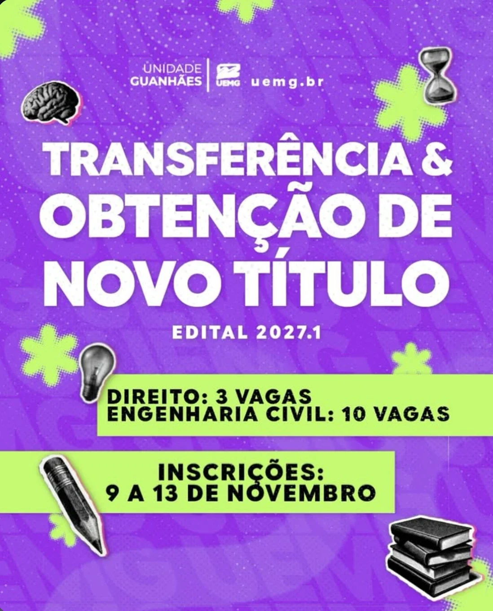

Transferência e obtenção de novo título
Estuda em outra faculdade e quer vir para a UEMG Guanhães? Ou já tem diploma e quer cursar Direito ou Engenharia Civil? A inscrição é de 9 a 13 de novembro, pela internet, e a seleção é pela média das notas do seu histórico.
Inscrições até 13 de novembro, às 17h

Já é estudante da UEMG? Este edital não serve para trocar de curso dentro da UEMG: quem está matriculado em curso da UEMG e pede transferência por aqui é desclassificado. Para mudar de curso, o caminho é o edital de reopção de curso.
Vagas na UEMG Guanhães
Direito
3 vagas
Bacharelado, noturno.
Engenharia Civil
10 vagas
Bacharelado, noturno.
Quem tem prioridade As vagas vão primeiro para a transferência e, se sobrarem, para a obtenção de novo título. Candidatos de instituições brasileiras vêm antes dos de instituições estrangeiras. Vagas que surgirem depois podem entrar no mesmo processo.
Quem pode se inscrever
Matriculado em curso de graduação de instituição brasileira credenciada (ou estrangeira reconhecida no país de origem), com pelo menos 1 período concluído, no mesmo curso ou num curso da mesma área.
Concluiu um curso de graduação em instituição brasileira credenciada, ou no exterior com o diploma revalidado no Brasil.
Estudantes matriculados na UEMG (que fazem reopção de curso) e quem cursa ou concluiu curso sequencial.
Para transferência: cursos da mesma área
Direito recebe estudantes de cursos de Ciências Sociais Aplicadas: Administração, Administração Pública, Arquitetura e Urbanismo, Arquivologia, Biblioteconomia, Ciências Contábeis, Ciências Econômicas, Comunicação Social, Design, Direito, Gestão Comercial, Gestão de Recursos Humanos, Gestão Pública, Jornalismo, Museologia, Processos Gerenciais, Publicidade, Relações Internacionais, Relações Públicas, Secretariado Executivo, Serviço Social, Turismo e Gestão do Agronegócio.
Engenharia Civil recebe estudantes de Engenharias: Aeroespacial, Ambiental, Biomédica, Civil, de Materiais, de Minas, de Produção, de Transportes, Elétrica, Mecânica, Metalúrgica, Naval, Oceânica, Nuclear, Química, Sanitária e Gestão Ambiental.
Passo a passo da inscrição
A inscrição é só pelo formulário on-line, com os documentos em PDF ou JPEG.
-
Separe os documentos
Para todos: histórico do curso de graduação, com a carga horária e as notas ou conceitos de cada disciplina (obrigatório). Transferência: comprovante de matrícula do 2º semestre de 2026. Novo título: diploma registrado ou declaração de conclusão. Opcional: programas ou planos de ensino das disciplinas aprovadas, que ajudam no aproveitamento.
-
Preencha o formulário até as 17h de 13/11
Pelo formulário de inscrição, escolhendo um só curso da Unidade Guanhães. Se fizer mais de uma inscrição, vale só a última.
-
Confira tudo antes de enviar
Depois do prazo não dá para corrigir nem completar nada. Falta de documento obrigatório, ou histórico sem as notas de cada disciplina, desclassifica.
-
Veja a lista de inscrições em 16/11
Sai no site da UEMG. Se o seu nome não estiver lá, o recurso é em 17 e 18/11, pelo formulário de recurso da lista.
Como é a seleção
Não tem prova. A classificação é pelo Coeficiente de Rendimento Acadêmico (CRA): a soma das notas do seu histórico dividida pelo número de disciplinas cursadas. É aprovado quem tem CRA de 60 ou mais, e as vagas vão para os maiores CRAs. Histórico só com conceitos: A vale 95, B vale 85, C vale 75, D vale 65 e E vale 55.
Calcule o seu CRA
Digite as notas de todas as disciplinas do histórico, separadas por espaço, vírgula ou ponto e vírgula. Pode usar conceitos (A a E). É só uma estimativa: quem calcula o CRA oficial é a UEMG.
Empate Fica na frente quem tem 60 anos ou mais (ou a idade mais alta) e, depois, quem precisa de menos adaptações curriculares.
Cronograma
- Publicação do edital
- Inscrição pelo formulário, das 9h do primeiro dia às 17h do último
- Lista de inscrições, no site da UEMG
- Recurso contra a lista de inscrições
- Inscrições homologadas
- Resultado preliminar, no site da UEMG e na Unidade
- Recurso contra o resultado preliminar
- Resultado final
- Matrícula presencial na Secretaria Acadêmica da Unidade
Recursos São 2 dias úteis depois de cada publicação, só pelo formulário (o do resultado preliminar é este), sem anexos e com argumentos objetivos. Não cabe recurso sobre erro do próprio candidato no formulário ou nos documentos.
Matrícula presencial
Na Secretaria Acadêmica da UEMG Guanhães, no horário de atendimento, com o requerimento de matrícula (a Secretaria fornece o modelo) e cópia simples com os originais de:
- histórico escolar e certificado (ou declaração) de conclusão do ensino médio;
- CPF e carteira de identidade;
- certidão de nascimento ou de casamento;
- título de eleitor e certidão de quitação eleitoral (maiores de 18 anos);
- quitação com o serviço militar (homens maiores de 18 anos);
- uma foto 3x4 recente.
Quem não fizer a matrícula no prazo perde a vaga. A matrícula pode ser feita por procurador, com procuração de poderes específicos. As disciplinas já cursadas podem ser aproveitadas, conforme a Resolução COEPE/UEMG nº 250/2020, e o colegiado indica as adaptações: veja em Secretaria e regras.
Dúvidas frequentes
Posso me inscrever em Direito e em Engenharia Civil?
Não. É permitida a inscrição em um só curso. Se houver mais de uma, vale a última enviada.
Meu histórico não tem as notas, só "aprovado".
O histórico precisa ter os pontos ou os conceitos de cada disciplina. Sem isso o candidato é desclassificado. Peça à sua instituição um histórico com as notas antes de se inscrever.
Curso outra coisa. Posso pedir transferência para Direito?
Pode, se o seu curso for de Ciências Sociais Aplicadas (veja a lista acima) e você já tiver concluído pelo menos 1 período. Para Engenharia Civil, o curso de origem precisa ser uma engenharia ou Gestão Ambiental.
As disciplinas que já fiz contam?
Podem contar. Depois da matrícula, o colegiado faz o estudo de aproveitamento e indica o que você ainda precisa cursar. Enviar os programas das disciplinas na inscrição ajuda nesse estudo.
Estudo na UEMG e quero mudar de curso.
Este edital não é para você: estudante da UEMG que pede transferência por aqui é desclassificado. O caminho é o edital de reopção de curso.
Fale com a Unidade
A Secretaria Acadêmica atende pelo secretaria.guanhaes@uemg.br, e o NAE ajuda a entender o edital.
- NAE
- Sala do NAE, no Prédio do Administrativo. Terças e quintas, das 18h às 19h
- nae.guanhaes@uemg.br
Edital completo e publicações: página oficial do edital na UEMG.